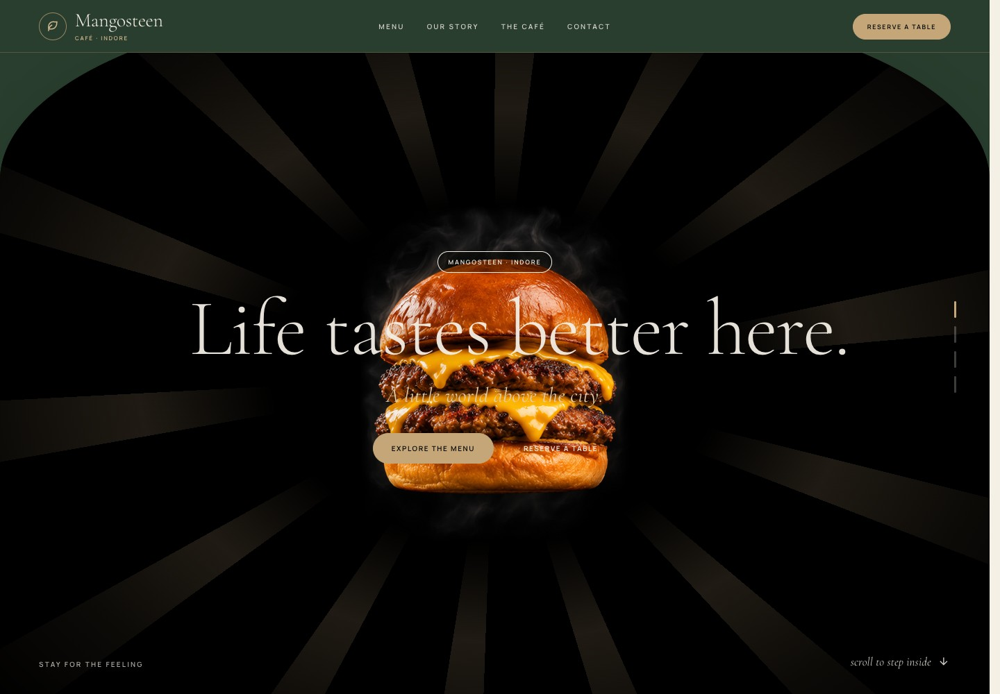
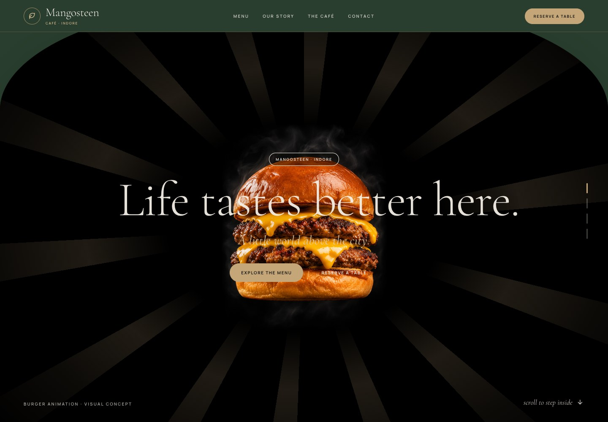
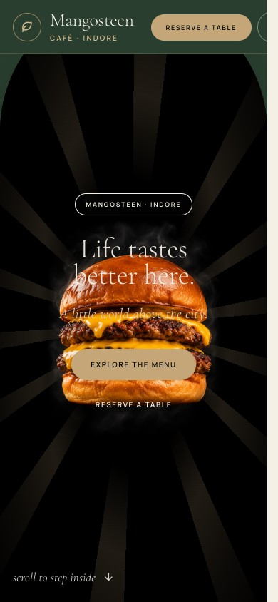
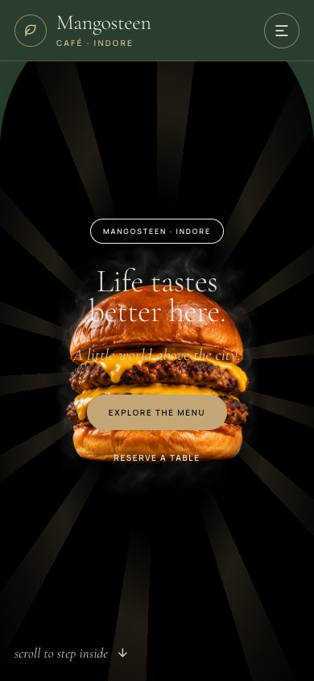
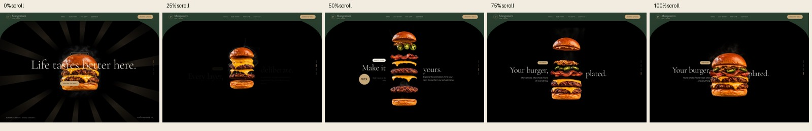

26 NOVEMBER 2026 · LOCAL REVIEW · NOT DEPLOYED
The supplied Mangosteen frontend.
Restored and connected.
Implementation checkpoint 35c9c54 · mangosteen-supplied-frontend. Previous version preserved at c035d43. The supplied design is restored; its demo business details are replaced by the existing café data and reservation system.
Watch the experience
Original reference and restored opening
The original mobile header overflows; the restored header keeps every control within the screen. Photographic artwork, typography, framing and motion are retained. Demo prices/contact information are adapted to verified existing data.

Saved design · original reference
Restored application · existing business integration
Original mobile header overflow
Restored mobile headerReversible burger animation

Five distinct canvas states verified; reverse playback returns to the exact opening canvas pixels.
Responsive and supporting pages
Verification evidence
Business tests submit to a disposable real Python/SQLite backend. No production data was touched. The source concept imagery is not claimed as actual café architecture, staff or dishes. Physical-device, cross-browser and field performance verification remain outside these local checks.
SUPPLIED MANGOSTEEN FRONTEND — RESTORATION REVIEW
26 November 2026 · Local only · Not deployed
INSPECT
http://127.0.0.1:5173/
http://127.0.0.1:5173/artifacts/supplied-frontend-review/index.html
RECOVERY
Branch: mangosteen-supplied-frontend
Implementation checkpoint: 35c9c54
Previous version preserved: checkpoint/before-supplied-frontend-c035d43 at c035d43
The final evidence commit follows the implementation. Use git log -1 for its exact hash.
The pre-existing untracked src/components/FullMenuDialog.tsx was left untouched.
RESTORED
The supplied Chrome-saved frontend's layout, forest/ivory/gold palette, local serif
and Manrope typography, header, four-stage canvas burger, poster story composition,
horizontal dish rail, short menu, animated marquee, craft composition, ingredient
artwork, lifestyle image, café visit block, giant letter-reveal footer and supporting
story/café/contact pages. Source atlas frame counts: {'A': 60, 'B': 45, 'C': 52}.
Burger forward/reverse playback uses the actual supplied sprites. Five distinct
progress states are captured; returning to zero produced the exact initial canvas hash.
Marketing page transitions reproduce the source's 750ms opacity choreography using
View Transitions, with rapid-navigation handling and native browser back support.
INTEGRATION
Original business source, catalogue, API clients, QR routes, reservations and CRM
remain unchanged. All menu buttons lead to the approved menu; featured dishes map
to actual catalogue entries. Reservations reuse the existing dialog and backend.
Protected business UI is outside the restored stylesheet scope.
The reference's demo prices, unverified popularity/preparation claims, placeholder
phone/address/email/hours and replacement Readdy booking/contact endpoints were
adapted to existing data and supported interfaces. No new external contact service.
Header overflow on phones and overlapping tablet navigation in the saved source
were corrected; mobile drawer supports focus containment, Escape and scroll locking.
ASSETS
All supplied files and linked burger assets are retained locally. Two additional
existing images linked by the source story/café pages were retrieved and localized.
No paid assets, paid API requests, external uploads or deployment.
The provided design imagery is conceptual/illustrative; it is not independently
verified as actual Mangosteen architecture, staff, food or servings. The previous
original café photographs remain untouched. The hero is labelled a visual concept
and dish preview imagery is labelled illustrative. Asset URLs and mapping are in
import-manifest.json, additional-source-images.json and the public asset manifest.
Fonts/icons use local files and included upstream licence notices. The existing
Google Fonts link in the protected document is retained. Builder preview tooling,
analytics, error collectors and promotion injection were excluded from active code.
The supplied watermark.png file is retained, but the builder promotion is not café UI.
VERIFICATION
npm run check: TypeScript/Vite production build PASS; CRM client syntax PASS;
9/9 existing Python backend tests PASS. Final image-only build PASS.
Eight visual/interaction groups PASS; five navigation groups PASS; five protected
business groups PASS. No new page errors, missing assets or bad HTTP responses.
Nine viewports 320x568, 360x800, 390x844, 430x932, 768x1024, 1024x768,
1440x900, 1920x1080, 2560x1440 show no horizontal document overflow.
Reduced motion renders the supplied static fallback. Keyboard Escape and focus
handling, exact dish links, rapid route changes, back navigation and reservation
entry verified. Desktop/mobile/navigation MP4s are actual Chrome captures.
83 protected file SHA-256 hashes match the baseline exactly.
Menu landing and Table 4 screenshots are byte-identical to the previous approved captures.
BUSINESS TESTS
131 dishes / 13 categories, search, persistent favourites, selection, Table 4 demo
order, full seat-selection reservation request, pending confirmation state, CRM
owner authentication/dashboard/order queue/reservation queue/settings tested with
a real Python/SQLite API using a disposable database. No customer data was changed.
LIMITATIONS
Creative visual approval is pending. The copied concept imagery is not an actual
architectural reconstruction or real-time 3D food model. It is the supplied rendered
sprite animation. Exact demo business copy is intentionally replaced with existing
facts. This does not claim every reference pixel is identical across browsers.
The existing reservation phone regex warning is present in the baseline and remains
in protected source. No physical phone, Safari/Firefox or field performance claims.
Local browser testing used Chrome/touch emulation on this Mac. Manual submissions
require the CRM server running on its configured port 4173; regression tests used
an isolated CRM instance, not that live service.
REPRODUCE
npm run dev -- --host 127.0.0.1 --port 5173
npm run check
node scripts/verify-supplied-frontend-business.mjs after
node scripts/review-supplied-frontend.mjs